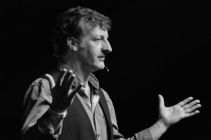

Staging the story with Michael Harvey - 2 dager. VENTELISTE
- Kategori:
- Tverrfaglige kurs
Tverrfaglige kurs
Åpent for profesjonelle skuespillere og andre profesjonelle deltakere med spesifisert bakgrunn og erfaring. Se søknadsteksten for spesifikasjoner. Legg ved CV. - Dato:
- 08.10.2014 til 09.10.2014
- Start kl :
- 11:00
- Slutt kl :
- 16:00
- Pris:
- 400,-
- Adresse:
- Norsk Skuespillersenter, Welhavensgate 1, Oslo
 Once the storyteller enters a theatrical space the rules change. The problem is that not many people know what the rules of this new game are. This workshop will help both storytellers and actors negotiate the meeting place of storytelling and stage in a way that helps them play this exciting new game.
{kind=link}
This workshop draws on Michael's extensive experience of inter-disciplinary performance practice and international collaboration to provide straightforward tools for collaborative performance.
The workshop takes place in English.
Organized in collaboration with Norsk Fortellerforum (NOFF).
About Michael Harvey
Michael has told stories both as a solo performer and with other artists throughout the UK and Europe as well as in North and South America. He combines depth of material with lightness of delivery which is timed and paced to perfection and minted fresh for every audience. In 2011 he was awarded a Major Creative Wales Award, is currently taking part in the the 3rd Labo at La Maison du Conte in Paris and was a featured teller at the 2012 National Storytelling Festival in Jonesborough, Tennessee.
Michael offers workshops to both those entering the field of storytelling and experienced performers, and has extensive experience teaching both actors and storytellers. He offers training in the core skills of the storyteller as well as what happens when the storyteller enters a theatrical space. He has led storytelling workshops in Britain, Europe and South America as well as drama departments in a number of universities. He holds a degree in Vocational Training from Cardiff University.
More background info
You can have a look at Michaels webpage here or read an article written by Michael about staging the story and the challenges involved here.
Workshop fee for members of NSF and NOFF: 350,-
Coming to Tromsø & Kristiansand!
In collaboration with RadArt and Scenekunst Sør we are also bringing the workshop to Tromsø and Kristiansand!
Tromsø: 11 & 12 October
Kristiansand: 13 & 14 October
Michael will also be performing in the different cities. Don't miss the show!
{kind=link}